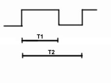

5040DB Check on operation of windscreen misting sensor
- Path
- Test > 50 AUXILIARY UNITS > 5040 AIR CONDITIONING CASING AND COMPONENTS > 5040D air conditioner controls > 5040DB Check on operation of windscreen misting sensor
- Kind
- test / check procedure
- Applies to
- all engines; all production periods
- Interactive page
- https://sloeber94.github.io/elrnDB-lYpsln/en/#/2429806
Applies to: all engines; all production periods
With the Examiner on the voltmeter function, select full scale deflection of 20 volts and time base of 5 seconds. Connect the black probe to the vehicle earth and the red probe to pin 3 of the fog sensor. Turn the key on and press the START button.
The signal displayed must be a PWM pulse train with a frequency of 100 hz and a Duty Cycle that varies between 10% and 90% as shown in the attached table.
Pin out:
- 1. earth
- 2. +15
- 3. not connected
- 4. signal output

Applies to: all engines; all production periods
PWM% Duty Cycle = T1 / T2 where:
- T1 = pulse duration
- T2 = 1/f = 1/100 Hz = Transmission duration
- T2 = 10msec ± 7%
PWM from 20% to 70%
This is the normal sensor operating range
Within this range, the sensor will supply a PWM signal proportional to the amount of misting on the windscreen.
PWM = 10%
Indicates internal sensor fault This fault is defined as follows:
sensor self-diagnostics revealed an internal electrical fault
PWM = 80%
This condition indicates a sensor limit condition. This is defined as follows:
The sensor optics are saturated due to excessive direct sunlight.
The signal is transmitted as long as the above limit condition persists.
PWM = 90%
This condition indicates a limit condition or sensor fault. This is defined as one of the following:
Sensor optics are saturated due to excessive reflected energy. This may be due to a very high level of misting or an object between the windscreen surface and sensor.
Sensor internal temperature reached and exceeded 70°C. The internal process is disabled to avoid damage. A fault signal is transmitted as long as the excess temperature persists.
PWM = 0 % and 100%
These two statuses will never be transmitted by the sensor.
Certain hardware faults may be interpreted by the receiving input stage as PWM signals of 0% or 100%. This is due to the static nature of the signal (microcomputer not processing or under conditions of s.c. to +12V or GND or open circuits).
Messages transmitted by PWM
100% Sensor off or fault in communication or s.c. to +12V
90% Sensor saturated or blocked or with excess temperature
80% Sensor fualty or directly radiated by sun
70% Misting intensity from Max. to moderate
60% Misting intensity from moderate to light
50% Misting intensity from light to identifiable
40% Misting intensity slightly visible
30% Misting intensity not visible to the human eye
20% Windscreen clear - No misting
10% Internal sensor fault
0% Sensor off or fault in communication or s.c to GND.